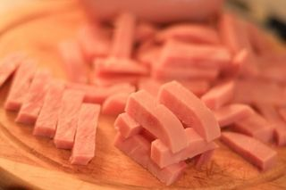
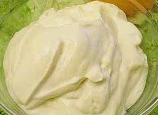
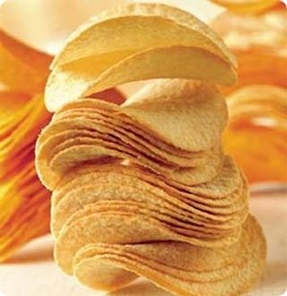

Шаг 1: Подготавливаем ингредиенты для салата.

Если вы используете для этого салата крупные грибы, то их необходимо измельчить, предварительно слив с них весь маринад. Ветчину нарежьте для начала на ломтики, а затем измельчите соломкой. Сыр натрите на крупной терке. Яйца отварите в небольшой кастрюльке на среднем огне, не менее 8 минут, чтобы они получились сваренными вкрутую. Затем поместите их под холодную воду, остудите, потом очистите от скорлупы и натрите на крупной терке. Морковь по-корейски нарежьте на кусочки, чтобы они получались примерно по 3 см в длину. Все измельченные ингредиенты следует разложить по разным ёмкостям, не смешивая их.

Для того чтобы сформировать этот салат необходимо выкладывать все ингредиенты слоями, в определенном порядке на плоское сервировочное блюдо, при этом каждый слой промазывать не толстым слоем майонеза. Слои старайтесь распределять равномерно, чтобы салат получился красивой формы. Лучше всего выкладывать его в форме горки. А распределять ингредиенты удобнее всего ложкой.
1 слой – морковь по-корейски; 2 слой – измельченные грибы; 3 слой – чипсы; 4 слой – ветчина соломкой; 5 слой – тертый сыр; 6 слой – рубленые яйца.
Шаг 3: Украшаем салат цветами из чипсов и яйца.

Для украшения салата необходимо отварить еще 2 куриных яйца в слегка подсоленной воде. Затем остудить их и очистить от скорлупы, отделить желтки от белка. Желтки натереть на самой мелкой терке, а затем выкладывать чайной ложечкой в форме кружочков. После этого вокруг каждого кружочка выложите лепестки цветка из целостных картофельных чипсов.